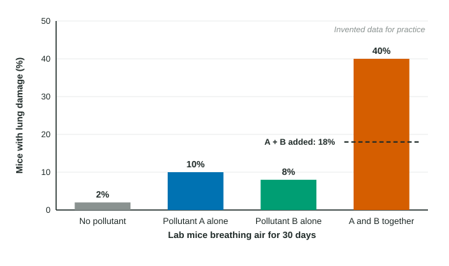

Lab tests give clean numbers: a dose, a group of rats, a percent that respond. Real life is messier. People breathe, drink and eat many substances at once, at changing doses, for decades. This page explains why linking a pollutant to a disease is hard, how pollutants can combine to do extra harm, the difference between acute and chronic effects, and three links the exam expects you to know.
Why cause and effect is hard to prove
Scientists cannot give people pollutants on purpose to see what happens. Instead they compare groups: people who live near a highway and people who do not, workers who handled a chemical and workers who did not. That is hard for several reasons:
- Mixed exposures. Everyone is exposed to many substances: traffic exhaust, indoor smoke, chemicals at work, pesticides on food.
- Other factors. Smoking, diet, income, access to doctors and genes all affect health, and they often differ between the groups being compared.
- Time lags. Some diseases appear 20 or more years after the exposure, when people have moved and records are gone.
- Different sensitivity. Children, older adults and people who are already ill can react to doses that healthy adults tolerate.
So a pattern, such as more asthma near a factory, is a strong clue but not proof. Stronger evidence is a change that tracks the suspected source: asthma visits that fall when the factory shuts down while traffic and wood smoke stay the same.
Synergism: when effects do not just add
You might expect two pollutants to add their effects. Sometimes they do far more. Synergism is when two or more substances together cause more harm than the sum of their separate effects. A well-known case: smoking and breathing asbestos fibers each raise the risk of lung cancer, but together they raise it far more than the two risks added.

Worked example. In the figure, 10% of mice breathing pollutant A had lung damage, 8% with pollutant B, and 40% with both. Is this synergism?
If the effects simply added: .
Observed with both: 40%. Compare by division: .
The combined effect is about 2.2 times what addition predicts, so the two pollutants act synergistically. The clean-air group (2%) is the control: it shows the background level of damage that every group is compared with.
Acute and chronic effects
| Acute | Chronic | |
|---|---|---|
| Exposure | short, often one high dose | long or repeated, often low doses |
| When effects appear | minutes to days | months to decades |
| Examples | dizziness from solvent fumes; an asthma attack on a smog day | mesothelioma after years of asbestos work; lead harming a child's development |
An LD50 test measures an acute effect: one dose, deaths counted soon after. It cannot show chronic harm, which is why long-term studies matter.
Three links to know
- Ground-level ozone and the lungs. Ozone in photochemical smog irritates and inflames the airways. High levels lower lung function and trigger asthma attacks, especially in children and people who exercise outdoors.
- Asbestos and mesothelioma. Asbestos was used in insulation and building materials. Its tiny fibers, when breathed in, lodge in the lungs. Mesothelioma, a cancer of the lining around the lungs, is caused mainly by asbestos and can appear decades later.
- Untreated sewage and dysentery. Where sewage flows untreated into streams and rivers that people drink from, microbes from human waste cause dysentery, a severe, bloody diarrhea that is dangerous for young children.
Writing a cause-and-effect chain
Exam questions often ask you to explain how a pollutant leads to a health effect. Name every link, in order, without skipping to the end. For particulates and asthma: particulates are breathed deep into the lungs, they irritate and inflame the airways, the airways narrow, and asthma attacks increase. "Particulates cause asthma" restates the question and earns little.
Percent change in health data
Health data often come as counts before and after a change. Use . If asthma visits rise from 1,250 to 1,500: